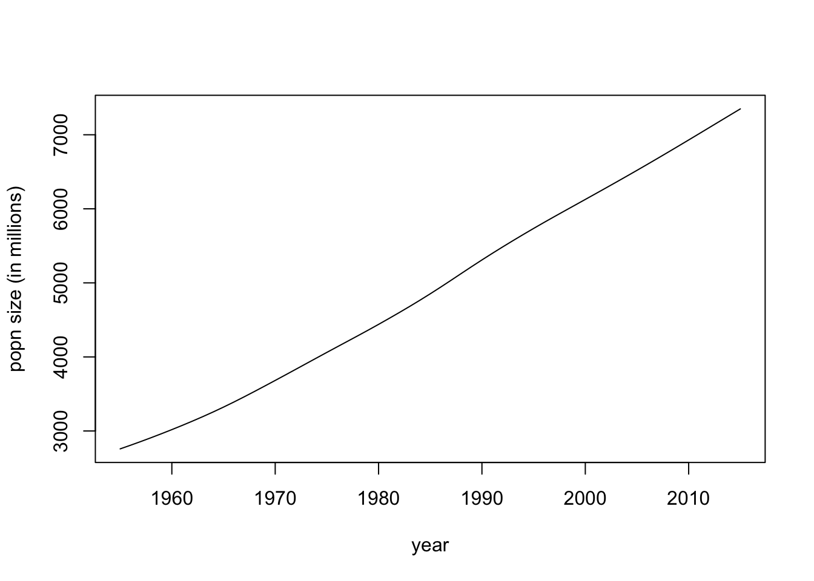

13 Fri Oct 9 and Thurs Oct 15: Data and the logistic equation
DUE DATE: Thurs Oct 22
13.1 Questions
Question 1.9 on p12 of Vandermeer and Gordon (but completed following the instructions below). Hand-in your graph with a figure caption. Your graph should have the intrinsic growth rate on the y-axis and population size (in millions) on the x-axis. In response to 'what kind of function would describe the data reasonably well', you just need to answer an increasing or decreasing function. [10 marks]
Based on your work in question 1, what is the value of the intrinsic growth when \(t = 1955, 2013\) and \(2014\)? [2 marks]
If a population is growing exponentially, and the intrinsic growth rate is plotted on the y-axis, and population size is plotted on the x-axis, what is the slope of the line? What does the intercept of the graph tell us? [2 marks]
13.2 The data
Question 1.9 in Vandermeer and Goldberg involves a large data table. It will be very boring to have to type all those numbers in by hand. Fortunately, here is a website, with a link to a similiar data set. Lets load in the data:
pop.data <- read.csv('https://ourworldindata.org/uploads/2013/05/WorldPopulationAnnual12000years_interpolated_HYDEandUNto2015.csv')Lets take a look at our data by entering the following in the console:
head(pop.data)## year World.Population..Spline.Interpolation.until.1950.
## 1 -10000 2431214
## 2 -9999 2432196
## 3 -9998 2433179
## 4 -9997 2434162
## 5 -9996 2435145
## 6 -9995 2436129Lets find out the column names of our data. Type the following into your console:
colnames(pop.data)## [1] "year"
## [2] "World.Population..Spline.Interpolation.until.1950."The second column name is weird. Let's replace it with a better name:
colnames(pop.data)<-c("year", "size")The data we have loaded starts in 10,000 B.C., but the Vandermeer and Goldberg data just starts in 1955. The code below identifies which rows correspond to 1955 onwards.
ind <- which(pop.data$year>=1955)Let's make a new dataset that only contains the data for 1955 onwards:
pop.data.1955 <- pop.data[ind,]In the above code the square brackets are the [rows,columns] that we are extracting. Note that the rows we would like, we have assigned the variable name ind. When the column argument is left blank this is understood to be all columns (or in this case, both columns: year and size).
Let's plot our data, but to make things easier, let's change the population size into millions (where 1e6 is scientific notation for millions).
pop.data.1955$size <- pop.data.1955$size/1e6
plot(pop.data.1955$year, pop.data.1955$size, typ = "l", xlab = "year", ylab = "popn size (in millions)")
13.3 The intrinsic growth rate
Now, consider the equation,
\[\begin{equation} N_{t+1} = r(N_t)N_t. \tag{13.1} \end{equation}\]This equation states that the population size in the next time step (\(N_{t+1}\)) is equal to the population size at time \(t\) (which is \(N_t\)), multiplied by the intrinsic growth rate, \(r(N_t)\), where the intrinsic growth rate might depend on population size (which is why \(r(N_t)\) is written that way: you can read it as '\(r\) is a function of \(N_t\)'). For example, with exponential growth, the intrinsic growth rate does not change with population size, so \(r(N_t) = \lambda\). However, when population growth demonstrates negative density dependence, then \(r(N_t)\) would be a decreasing function of population size, \(N_t\).
Consider the Beverton-Holt equation which is equation 28 on p29 of Vandermeer and Goldberg:
\[ N_{t+1} = \frac{\lambda N_t}{1+\alpha N_t}. \]
Note that this could be written in the form of equation (13.1) where,
\[\begin{equation} r(N_t) = \frac{\lambda}{1+\alpha N_t}. \end{equation}\]Therefore, the Beverton-Holt equation demonstrates negative density dependence since the intrinsic growth rate, \(r(N_t)\), is a decreasing function of population size, \(N_t\).
By re-arranging equation (13.1), we can see that the intrinsic growth rate is calculated as:
\[ r(N_t) = \frac{N_{t+1}}{N_t}, \]
such that the intrinsic growth rate can be understood as a ratio of population sizes at consecutive time points. How might we calculate the intrinsic growth rate for our data?
First, we should note that Question 1.9 in Vandermeer and Goldberg asks us to plot the intrinsic growth rate (y-axis) versus the population size (x-axis). Let's take \(N_{1955} = 2758\): this is our first x-axis value, but what is the corresponding y-value? The answer is:
\[ r(N_{1955}) = \frac{N_{1956}}{N_{1955}} = \frac{N_{t+1}}{N_t} \mbox{ where $t = 1955$}. \]
Note that the numerator values will be the sequence of values
\([N_{1956}, N_{1957}, ..., N_{2015}]\),
and the denomenator values will be the sequence of values
\([N_{1955}, N_{1956}, ..., N_{2014}]\).
Therefore, the numerator values are the list of all population sizes except the first value (\(N_{1955}\)), and the denomenator values are the list of all population sizes except the last value (\(N_{2015}\)). The functions head() and tail() can be used to remove values from a list:
numerator <- tail(pop.data.1955$size,-1)
denomenator <- head(pop.data.1955$size,-1)And then we can calculate the list of intrinsic growth rates, \(r(N_t)\):
r <- numerator/denomenatorNow consider the values we need for our x-axis. The last value of \(r(N_t)\) that we calculated was \(\frac{N_{2015}}{N_{2014}} = \frac{N_{t+1}}{N_t}\) when \(t=2014\), which means that the last value of \(N_t\) we have a corresponding \(r(N_t)\) value for is \(N_{2014}\). Therefore, our x-axis nees to be:
Nt <- head(pop.data.1955$size,-1)Finally, we need to make the plot as required by Question 1.9.
plot(Nt, r, typ = "l")It will be your job to put appropriate axes labels on the plot.
13.4 References
Vandermeer, J.H., Goldberg, D.E., 2013. Population Ecology: First Principles (Second Edition). Princeton University Press, Princeton, United States. Link